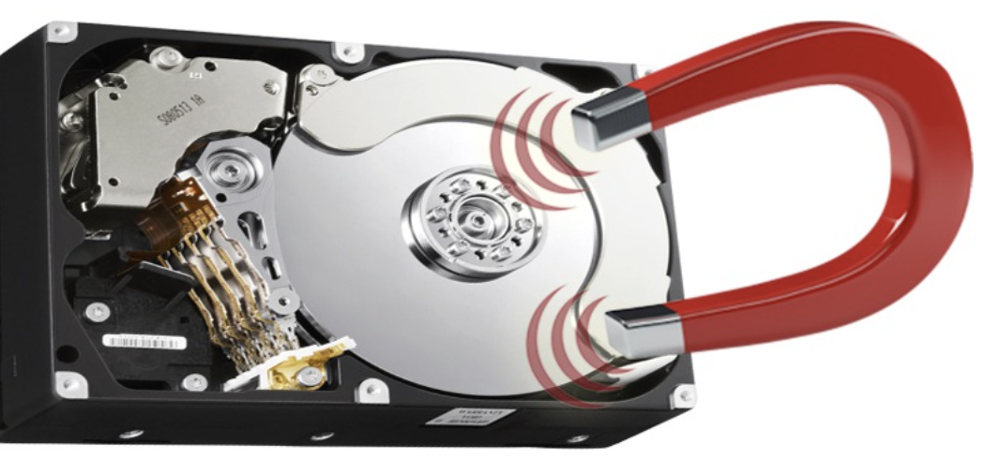

Drilling / hammering
Drilling holes straight through magnetic platters or physically breaking the drive. Offers a quick, simple way to render media unusable.
2.9
How to permanently destroy or securely wipe storage media before disposal, recycling, or repurposing.
Irreversible techniques that render storage media completely unusable.
Drilling holes straight through magnetic platters or physically breaking the drive. Offers a quick, simple way to render media unusable.
Uses heavy industrial machinery to grind drives into tiny fragments for complete destruction.

Applies high-power electromagnetic fields to remove magnetic domains. Completely erases data and destroys hard drive functionality.
Subjects drive hardware to extreme heat to burn and destroy storage components.
Software-based sanitization that allows drives to be reused — with varying levels of security.

Deletes specific files using tools like Windows Sysinternals Sdelete, though remaining unallocated data remains untouched.

Software utilities like DBAN (Darik’s Boot and Nuke) overwrite all storage sectors, securely wiping data so the drive can safely be repurposed.

Performed at the factory by the manufacturer. Generally not recommended or performed by end users.

Clears the Master File Table (MFT) and sets up a new file system, but leaves the underlying data intact where software recovery tools can still retrieve it.

Overwrites every drive sector with zeros, preventing data recovery. This process has been the default behavior since Windows Vista.
Clears file table only — data recoverable.
Overwrites all sectors with zeros — data not recoverable.
When organizations hand off destruction to specialized vendors.

Organizations frequently contract specialized third-party vendors equipped with industrial destroyers, drills, and degaussers to manage high-volume disposal.

Service providers supply an official certificate to provide a verified paper trail confirming how and when specific hardware serial numbers were destroyed.
Legal obligations and risks when sanitization is done poorly.

Highly regulated sectors — including healthcare, financial services, and research organizations — are bound by legal mandates and local policies requiring complete physical destruction of retired storage media.

Inadequate sanitization leaves residual PII (Personally Identifiable Information), corporate emails, and confidential files on secondary markets (e.g., eBay), exposing organizations to regulatory fines and privacy breaches.